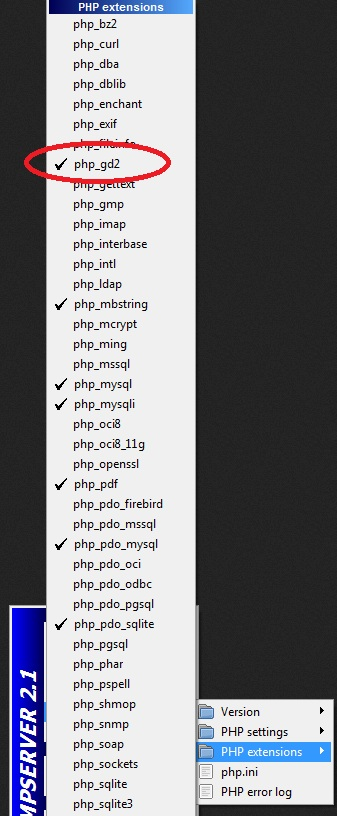

Existe un conjunto de funciones que nos permite la creación de un archivo de imagen (jpg, png, gif, etc.) en el servidor y posterior envío al navegador que la solicitó. Es decir que, con PHP, no sólo podemos hacer páginas dinámicas sino también imágenes dinámicas.
Veamos un ejemplo sencillo y útil donde aplicar la generación de una imagen dinámica. Casi todos hemos visto que los sitios nos obligan a ingresar un código verificador para registrarnos a un servicio de internet. Generalmente es un gráfico con una serie de números y letras poco legibles (esto se hace para confirmar que quien está ingresando los datos se trata de un ser humano y no un programa de computadora camuflado como persona).
Este tipo de problema se adapta muy bien para emplear la creación de imágenes dinámicas. Veamos el código que nos permite resolver este problema:
<?php
$ancho=100;
$alto=30;
$imagen=imageCreate($ancho,$alto);
$amarillo=ImageColorAllocate($imagen,255,255,0);
ImageFill($imagen,0,0,$amarillo);
$rojo=ImageColorAllocate($imagen,255,0,0);
$valoraleatorio=rand(100000,999999);
ImageString($imagen,5,25,5,$valoraleatorio,$rojo);
for($c=0;$c<=5;$c++)
{
$x1=rand(0,$ancho);
$y1=rand(0,$alto);
$x2=rand(0,$ancho);
$y2=rand(0,$alto);
ImageLine($imagen,$x1,$y1,$x2,$y2,$rojo);
}
Header ("Content-type: image/jpeg");
ImageJPEG ($imagen);
ImageDestroy($imagen);
?>
Lo primero que hay que tener en cuenta es que el archivo es PHP puro, es decir no tiene salidas HTML, esto debido a que es una imagen la que se genera y no un archivo HTML. Luego veremos que a esta imagen se la puede incorporar en un archivo HTML y ser parte dentro de una etiqueta IMG.
Lo primero que hacemos es llamar a la función imageCreate pasando como parámetros el ancho y el alto de la imagen a crear:
$ancho=100; $alto=30; $imagen=imageCreate($ancho,$alto);
La función imageCreate retorna una referencia a la imagen; la que utilizaremos en todas las otros funciones.
Seguidamente adquirimos una referencia a un color y rellenamos el fondo de la imagen con dicho color:
$amarillo=ImageColorAllocate($imagen,255,255,0); ImageFill($imagen,0,0,$amarillo);
La función ImageColorAllocate tiene como parámetros la referencia a la imagen creada y los tres valores que indican la cantidad de rojo, verde y azul para la mezcla.
La función ImageFill rellena con color a partir de las coordenadas que le pasamos en el segundo y tercer parámetro.
Hasta ahora tenemos un rectángulo de 100x30 pixeles de color amarillo.
Para dibujar el código verificador tenemos:
$rojo=ImageColorAllocate($imagen,255,0,0); $valoraleatorio=rand(100000,999999); ImageString($imagen,5,25,5,$valoraleatorio,$rojo);
Recordemos que la función rand nos retorna un valor aleatorio comprendido entre los dos valores que le pasamos como parámetro. Seguidamente, con la función ImageString imprimimos el número generado de color rojo en las coordenadas 25,5 y con un tamaño de fuente 5 (valores posibles de fuente son de 1 a 5).
Tenemos dibujado el código verificador (en nuestro caso es un número verificador, ya que no hemos incorporado caracteres) ahora para hacer más dificil la lectura del número incorporaremos una serie de segmentos que tapen en forma parcial el número aleatorio:
for($c=0;$c<=5;$c++)
{
$x1=rand(0,$ancho);
$y1=rand(0,$alto);
$x2=rand(0,$ancho);
$y2=rand(0,$alto);
ImageLine($imagen,$x1,$y1,$x2,$y2,$rojo);
}
Disponemos un for para que dibuje 6 líneas. Para graficar las líneas llamamos a la función ImageLine que tiene cuatro parámetros fundamentales que son las coordenadas de los dos puntos de origen y fin de la línea. Como sabemos el ancho y alto de la imagen y para que la línea se encuentre dentro de los límites del gráfico, disponemos como valor máximo los valores almacenados en $ancho y $alto.
Hasta aca la imagen se encuentra en memoria, debemos además indicar qué formato tendrá y enviarla al cliente que la solicitó:
Header ("Content-type: image/jpeg");
ImageJPEG ($imagen);
ImageDestroy($imagen);
También en este tipo de problemas requerimos la función header (recordemos que la empleamos en el redireccionamiento) Indicamos el tipo de archivo que recibirá el navegador. Llamamos en este caso a la función ImageJPEG (podríamos llamar también a ImagePNG, ImageGIF, etc.) que genera la información de la imagen propiamente dicha y por último llamamos a la función ImageDestroy para liberar los recursos ocupados en el servidor por este proceso de generación de la imagen.
Para el correcto funcionamiento de las funciones gráficas debemos activar las extensiones de PHP que nos permiten esta funcionalidad, para esto debemos activar desde el WampServer la extensión php_gd2:
Copiar el contenido de este cuadro de texto al NotePad++ y grabarlo en la carpeta c:\wamp\www con un nombre con extensión php (si hay varios cuadros
de texto grabar cada uno en un archivo distinto).
luego abrir el navegador (Chrome, FireFox, IExplorer etc.) y en la barra de direcciones tipear: http://localhost/pagina1.php (o el nombre del
archivo que le dió)
Confeccionar una imagen dinámica que represente un botón. Utilizar las funciones vistas para imprimir el texto del botón y para rellenar regiones del gráfico, emplear la función imageFilledRectange. ImageFilledRectangle crea un rectángulo relleno con color "col" en la imagen "imagen", comenzando con la coordenada superior izquierda (x1, y1) y finalizando en la coordenada inferior derecha (x2, y2).
imagefilledrectangle ( imagen,x1,y1,x2,y2,col)Recordar que debe ser PHP puro, por lo que deberá borrar todo el código HTML que se encuetra fuera de las marcas:
<?php ?>